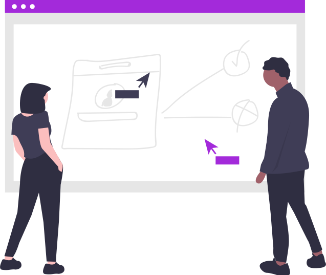

O que é:
O objetivo do projeto é desenvolver uma página web responsiva para visualização de mensagens e imagens com integração com a API do Twitter. Isso proporcionou á equipe experiência para podermos apresentar nossos conhecimentos e nossa atuação como front-end. Este projeto consiste em três partes, primeiro foi construida em códigos de HTML, depois estilizado com o CSS para começar a dar vida ao projeto e implementamos o JavaScript. Utilizamos também no meio do processo os frameworks React e o Angular, para renderizar de forma eficiente o nosso trabalho.
